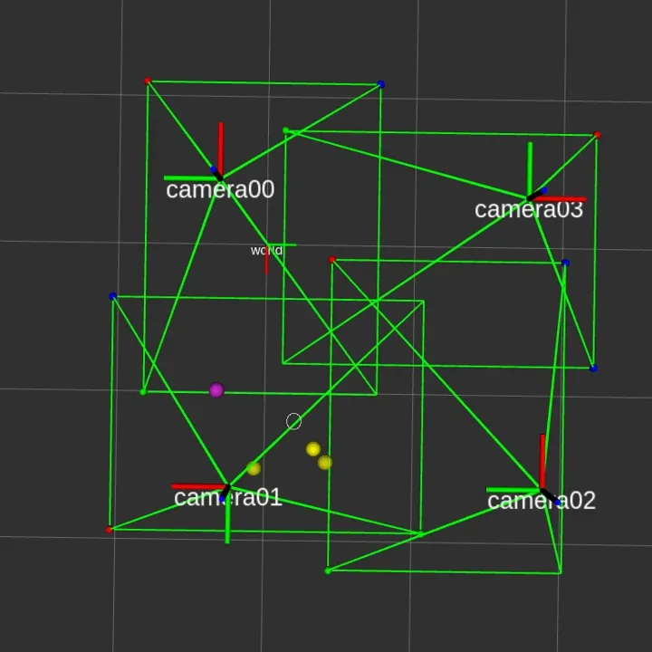

Helping robots find their place indoors
École Centrale de Nantes · France
Before robots can work together, they need to agree on where they are. This project used overhead infrared cameras to give them a shared view of an indoor workspace.

Why counting wheel turns is not enough
A mobile robot can estimate how far it has travelled by tracking its wheels. This is called odometry. Small errors accumulate over time, so the robot’s estimate can drift away from its real position.
This project explored another reference: cameras fixed above the workspace. By observing infrared light markers on the robots, the system could locate them relative to the room, rather than relying only on how far their wheels appeared to move.
Four cameras, one coordinate system
Four ceiling-mounted cameras were arranged at the corners of an approximately one-metre square, with overlapping views. The overlap helped connect the cameras’ individual observations into a common frame of reference.
Camera readings travelled over a CAN bus, a communication link used to exchange data between devices. Software built with ROS, a framework for connecting robot software components, translated those readings into coordinates. RViz—a robot-data visualization tool—displayed the camera coverage and detected points.
Calibration made the readings useful
The cameras needed to agree on how their measurements related to the same physical space. Calibration is that alignment process: it turns separate camera views into positions the rest of the system can use.
The project used ROS calibration software and boards fitted with infrared LEDs. After calibration, the reported localization accuracy was approximately 5 cm in the experimental setup. The modular approach also provided a way to calibrate additional cameras as the array grew.
Working on something similar?
If this project connects with a problem or idea you’re exploring, I’d enjoy comparing notes.